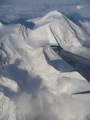
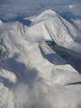

Elizabeth S. Allman
| Professor |
US Mail:
|
| Senior Research Associate, IAB |
Department of Mathematics and Statistics |
| Office: Chapman 308B |
University of Alaska Fairbanks |
| Phone: (907) 474-2479 |
PO Box 756660 |
| E-mail: e.allman@alaska.edu |
Fairbanks, AK 99775 |
Education
University of California at Los Angeles M.A., 1992
University of California at Los Angeles Ph.D., 1995
Research Interests
Biomathematics, including techniques of phylogenetic
tree construction, models of evolution
Statistics, Latent class models, Computational algebraic statistics
Division algebras; Brauer groups; Galois Theory
Recent Papers, Software, and Publications
Split scores: a tool to quantify phylogenetic signal in genome-scale data with L. Kubatko and J. Rhodes.
paper
SplitSup
version 1.01 available now. Download from GitHub or in
zip format.
Salmon Problem:
Determine the ideal defining the fourth secant variety of P^3 x P^3 x P^3.
Set theoretic version solved!
Some details, including
a prize for its solution. (Posed March 2007)
Congratulations to Shmuel Friedland for solving the set-theoretic version of the problem (spring 2010)!
Further progress by Dan Bates and Luke Oeding (2010). Still further progress by Friedland, Gross (April 2011).
And Claudio Raciu (2012). And by Daleo and Hauenstein (2016).
If you have access to MathSciNet, seach on the phrase `salmon problem' to follow the thread.
Professional Service and Honors
Fellow, American Mathematical Society
Associate Editor, American Mathematical Monthly
Guest Editor with F. Adler and L. de Pillis of American Mathematical Monthly special issue on Mathematical Biology.
Access this
special issue
on the MAA website.
My term as Vice-chair, SIAM's new activity group SI(AG)^2 on
Algebraic Geometry ended.
See the
article
about SI(AG)^2 in the December 2009 issue of SIAM news.
|

|
Mathematical Models in Biology
An Introduction
Elizabeth S. Allman and John A. Rhodes,
Cambridge
University Press, January 2004.
Table of Contents, Preface, etc. bookinfo.pdf
Solution Manual for Mathematical Models in Biology: An
Introduction, (electronic)
Elizabeth S. Allman and John A. Rhodes
List of known errata.
(Please e-mail additional errors to e.allman@alaska.edu.) |

|
Recent/Upcoming talks and short courses
Algebraic and Combinatorial Phylogenetics Workshop, Barcelona, Spain (June/July 2017)
Mathematical and Computational Evolutionary Biology conference, Porquerolle island, France (June 2017)
Center for Integrative Bioinformatics Vienna (CIBIV) (June 2017)
Oberwolfach (April 2017)
Banff International Research Station (Feb. 2017)
SIAM annual meeting and Life Sciences meeting, Boston, MA (July 2016)
Evolution Meetings, Austin, TX (June 2016)
Joint Statistics Meetings, Seattle, WA (Aug 2015)
Texas Christian University, Ft. Worth, TX (Feb 2015)
New Mexico High School State Mathematics Contest, Albuquerque, NM (Jan 2014)
University of New Mexico Colloquium, Albuquerque, NM (Jan 2014)
University of Canterbury colloquim, Christchurch, NZ (Aug 2013)
UC Berkeley computational biology seminar, Berkeley, CA (Mar 2013)
Algebraic Statistics, State College, PA (June 2012)
Joint Mathematics Meetings, Boston, MA (Jan 2012)
Evolutionary Genomics Workshop, IPAM, Los Angeles, CA (Nov 2011)
Workshop for Young Researchers in Mathematical Biology, MBI, Columbus, OH (Aug 2011)
AMS Western Sectional Meeting (May 2011)
An Afternoon of Biology and Math, KTH, Stockholm, Sweden (Feb 2011)
Algebraic Geometry in the Sciences, CMA, Oslo, Norway (Jan 2011)
Phylomania, Hobart, Tasmania (Nov 2010)
Evolution Meetings (June 2010)
Slides from less recent talks.
Upcoming Travel
2017:
Phylogenetics month in Barcelona, Spain, June/July
Mathematical and Computational Evolutionary Biology conference,
Porquerolle Island, June
Oberwolfach, April
BIRS, Feb.
Some favorite places I've visited professionally:
University of Canterbury, Christchurch, NZ
NIMBioS, TN
American Institute of Mathematics, Palo Alto, CA
Mathematical Biosciences Institute, Columbus, OH
Mittag-Leffler Institute, Sweden
University of Tasmania, Hobart, AU
Laboratoire Statistique et Genome, Evry, France
Renyi Institute, Budapest, Hungary
Isaac Newton Institute, Cambridge, England
Institute for Mathematics and its Applications, Minneapolis, MN
Teaching
On sabbatical 2016-17!
Professional Memberships
AMS, MAA, SIAM, Society of Systematic Biologists, AWM, Project NExT
Marathon Running, Hiking, Travel, Reading, Music, Swimming, Skiing, Kids, Good Humor


 



{kind=link}
{kind=link}
{kind=link}
{kind=link}
{kind=link}
{kind=link}
{kind=link}
{kind=link}
{kind=link}
{kind=link}
{kind=link}
{kind=link}
{kind=link}
{kind=link}
{kind=link}
{kind=link}